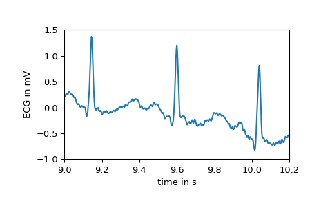
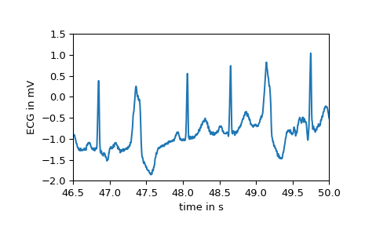
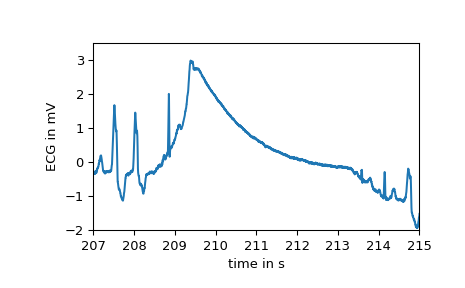

Load an electrocardiogram as an example for a 1-D signal.
The returned signal is a 5 minute long electrocardiogram (ECG), a medical
recording of the heart’s electrical activity, sampled at 360 Hz.
Returns
ecgndarray
The electrocardiogram in millivolt (mV) sampled at 360 Hz.
Notes
The provided signal is an excerpt (19:35 to 24:35) from the record 208
(lead MLII) provided by the MIT-BIH Arrhythmia Database [1] on
PhysioNet [2]. The excerpt includes noise induced artifacts, typical
heartbeats as well as pathological changes.
Moody GB, Mark RG. The impact of the MIT-BIH Arrhythmia Database.
IEEE Eng in Med and Biol 20(3):45-50 (May-June 2001).
(PMID: 11446209); DOI:10.13026/C2F305
Goldberger AL, Amaral LAN, Glass L, Hausdorff JM, Ivanov PCh,
Mark RG, Mietus JE, Moody GB, Peng C-K, Stanley HE. PhysioBank,
PhysioToolkit, and PhysioNet: Components of a New Research Resource
for Complex Physiologic Signals. Circulation 101(23):e215-e220;
DOI:10.1161/01.CIR.101.23.e215
As stated the signal features several areas with a different morphology.
E.g., the first few seconds show the electrical activity of a heart in
normal sinus rhythm as seen below.
>>> importmatplotlib.pyplotasplt>>> fs=360>>> time=np.arange(ecg.size)/fs>>> plt.plot(time,ecg)>>> plt.xlabel("time in s")>>> plt.ylabel("ECG in mV")>>> plt.xlim(9,10.2)>>> plt.ylim(-1,1.5)>>> plt.show()

After second 16, however, the first premature ventricular contractions, also
called extrasystoles, appear. These have a different morphology compared to
typical heartbeats. The difference can easily be observed in the following
plot.
>>> plt.plot(time,ecg)>>> plt.xlabel("time in s")>>> plt.ylabel("ECG in mV")>>> plt.xlim(46.5,50)>>> plt.ylim(-2,1.5)>>> plt.show()

At several points large artifacts disturb the recording, e.g.:
>>> plt.plot(time,ecg)>>> plt.xlabel("time in s")>>> plt.ylabel("ECG in mV")>>> plt.xlim(207,215)>>> plt.ylim(-2,3.5)>>> plt.show()

Finally, examining the power spectrum reveals that most of the biosignal is
made up of lower frequencies. At 60 Hz the noise induced by the mains
electricity can be clearly observed.
>>> fromscipy.signalimportwelch>>> f,Pxx=welch(ecg,fs=fs,nperseg=2048,scaling="spectrum")>>> plt.semilogy(f,Pxx)>>> plt.xlabel("Frequency in Hz")>>> plt.ylabel("Power spectrum of the ECG in mV**2")>>> plt.xlim(f[[0,-1]])>>> plt.show()